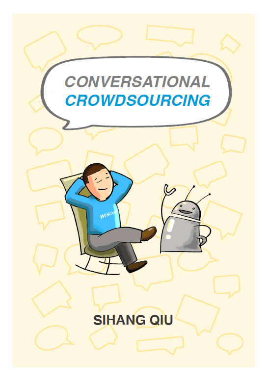

Sihang Qiu is an assistant professor at Hunan Institute of Advanced Technology (HIAT, organizing) and College of Systems Engineering of NUDT. He received his Ph.D. from the Web Information Systems group of TU Delft in 2021. Sihang is interested in developing novel Human-AI Interaction techniques. His research focuses on:
- Human-Centered AI
- Crowd Computing
- Conversational Agent
- User Interface Design
News
- Our work "Strategy Evaluation and Optimization with an Artificial Society towards a Pareto Optimum" has been accepted by The Innovation.
- One full paper "Great Chain of Agents: The Role of Metaphorical Representation of Agents in Conversational Crowdsourcing" accepted at CHI 2022.
- Two full papers "To Trust or Not To Trust: How a Conversational Interface Affects Trust in a Decision Support System" and "What Should You Know? A Human-In-the-Loop Approach to Unknown Unknowns Characterization in Image Recognition" accepted at WWW 2022.
- Our work about source searching in the indoor scene with obstacles has been accepted by Building and Environment.
- Journal paper "An Analysis of Music Perception Skills on Crowdsourcing Platforms" accepted by Frontiers in Artificial Intelligence.
